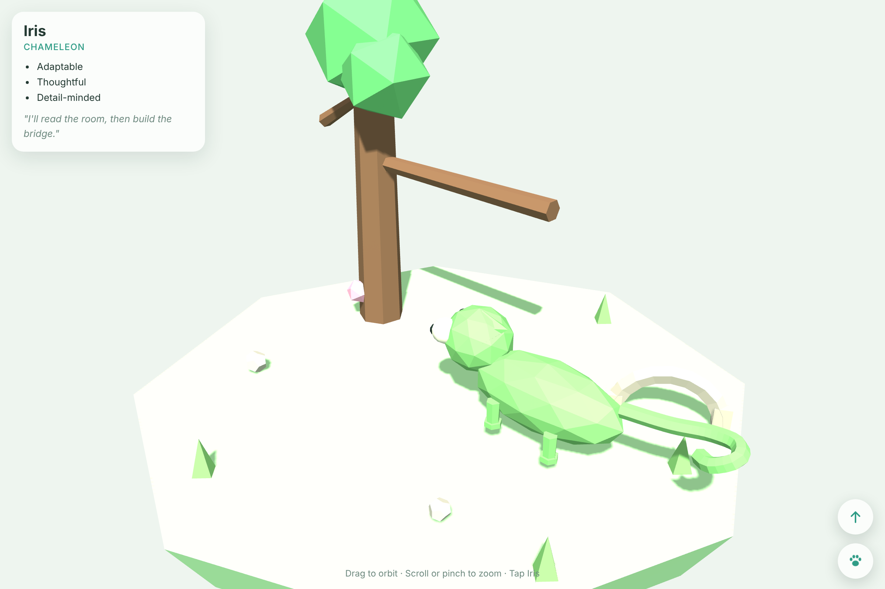
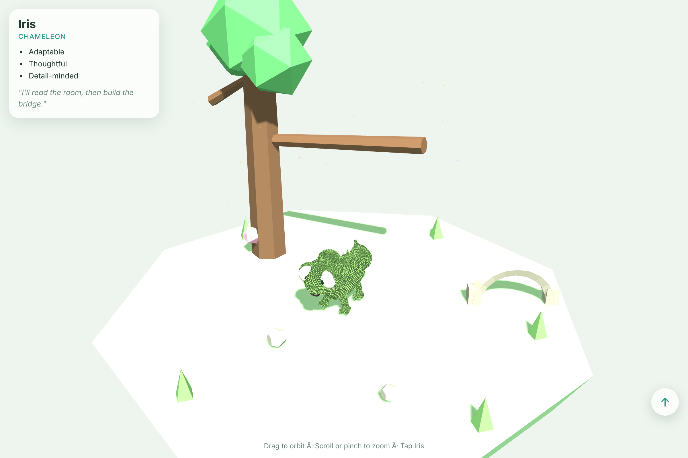
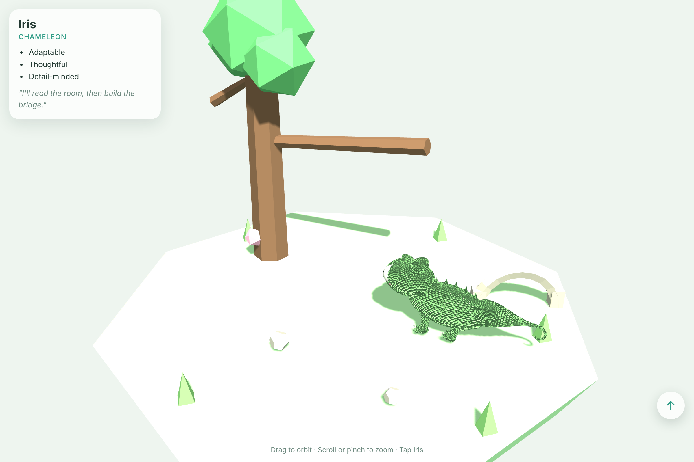

Creating this animation
How Iris changed over time, stage by stage, with the main changes in each. Built with Claude one change at a time.
-
Stage 1
The brief
I started with a short spec: a 3D animal you can drag to orbit, zoom with scroll or pinch, a slow spin after a few seconds of rest, a reaction when tapped, and a card with its name and traits. No external images, and it had to work on a phone.
Main items
- Tried a cat, a fox and a few other animals before settling on a chameleon.
- Set the look: soft lighting, a rounded body and a card with the name and motto.
-
Stage 2
The first render that worked

The first version where Iris, the island and the tree all showed up.
Iris sits on the island beside a brown tree with one branch and a leafy top. The card is in the corner, and the arrow button at the bottom right makes him climb.
Main items
- A chameleon with a casque, eye turrets and a coiled tail.
- A tree with a trunk, one branch and a canopy.
- Drag, zoom, a slow spin after a few seconds, and tap reactions.
-
Stage 3
Climbing the tree

After the climb button is pressed, Iris walks across the island towards the tree.
Iris learned to climb. He walks to the base, climbs the back of the trunk, goes round it at branch height and steps onto the branch. Much of this stage was about making sure he looked like he was on the bark, not inside it.
Main items
- A path along the bark, with his belly facing the trunk.
- Feet that reach the bark, and legs that stop pointing away from it.
- A step onto the branch, then walking out along it.
-
Stage 4
Sitting, sleeping and waking
After a short rest on the ground, Iris settles with his tail and eyes changing.
When he's still for a while, he sits, and his tail coils as he sits. Then the eyelids close slowly, and the zzz appears only once he is asleep. The timing took several rounds, because early versions showed the zzz too soon.
Main items
- Sit after a short rest, then sleep after a longer one.
- Eyelids that close slowly from the middle.
- The zzz timed to come after he's asleep.
-
Stage 5
Tap reactions
A tap makes him react in one of three ways: a jump with confetti, a turn to face another way with an annoyed look, or a head tilt with a question mark. He won't repeat the same reaction more than three times in a row.
Main items
- Jump with sparkles, turn, or tilt his head.
- An annoyed look that builds, holds, then fades after the turn.
- Turns of 90 and 180 degrees on the branch, so he stays on it.
-
Stage 6
The tail
The tail went from a plain tube to a thin sheet that unrolls from the body, tapers to a fine tip and rolls up like paper. It was hard to get right on the branch, where the tail kinked until it was rebuilt as one piece.
Main items
- A tail that tapers from the body to the tip, with scales.
- A coil at the tip that winds the other way on the branch.
- The kink on the branch removed, so the tail tilts as one line.
-
Stage 7
Body, legs and face

The version before the site layout. Scales cover the body and tail, and the legs are longer and slimmer.
This is where Iris started to look like a real chameleon. The body was made compact and deep, the head larger, and the legs longer and slimmer, with elbows and knees. The toes became two opposing bundles, like pincers.
Main items
- Scales on the skin and tail.
- A compact, deep body with a larger head.
- Long slim legs with clear joints, and toes that grip the branch.
- Eyes that move only as far as the pupils stay visible, and a tongue that flicks out when he turns.
-
Stage 8
The site

On the site, Iris sits on the left and the work profile is on the right while he's up the tree.
Last, Iris was moved onto my site. He sits on the left third of the page, and the profile on the right changes with where he is. The island is framed to fit the whole scene when the page opens, and he drops onto the branch when he comes in.
Main items
- Iris in the left third, with the profile beside him.
- Above the branch, the work profile. On the ground, the personal side.
- The whole island in view on load, with a drop onto the branch.